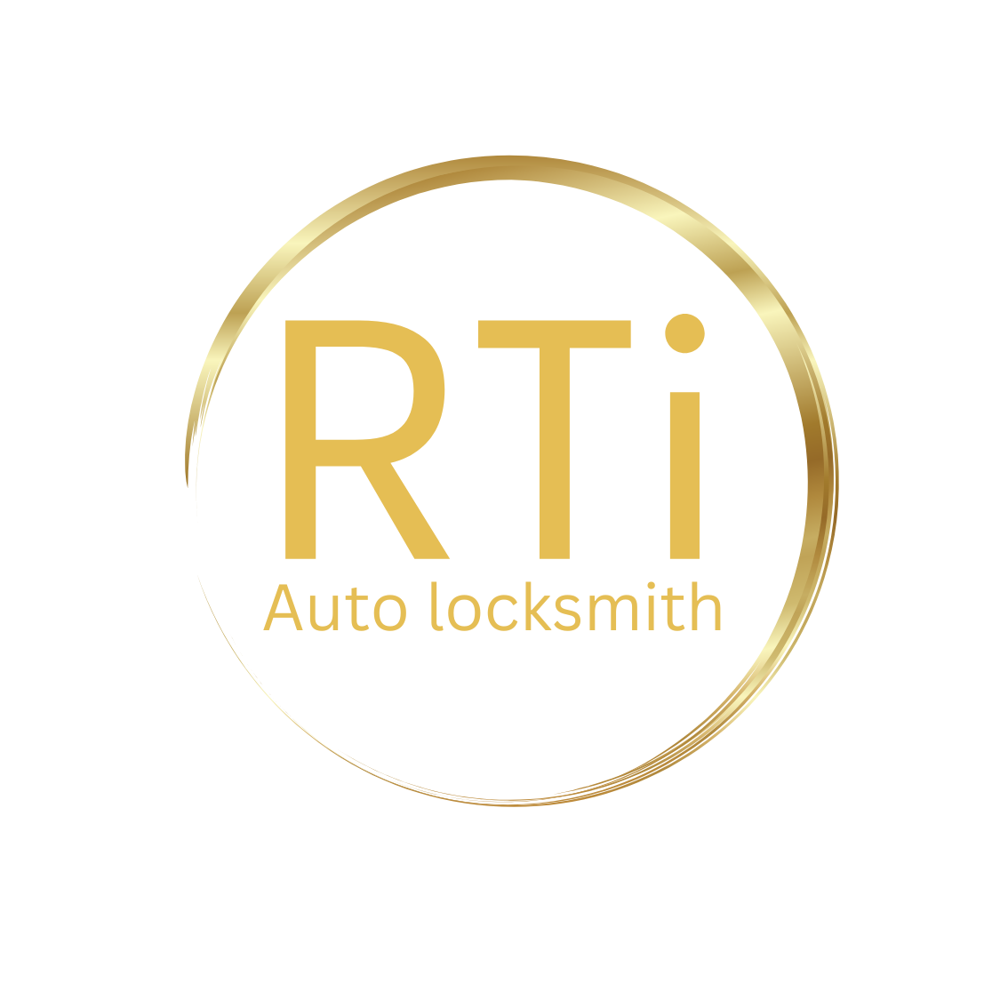

Bootle Auto Locksmith
24/7 Mobile Car Key Replacement, Programming and Emergency Unlocking in Bootle
RTi Auto Locksmith provides professional mobile auto locksmith services in Bootle, including lost car key replacement, spare keys, programming and emergency vehicle access support.
We also assist with ignition issues, selected van keys, selected motorcycle key help, ECU support and dashboard-related services depending on the vehicle system.
Call now: +44 7850 671304
Email: rtiautolocksmith@gmail.com
Mobile Auto Locksmith Services in Bootle
We provide mobile support for lost car keys, spare keys, key programming, ignition faults, emergency vehicle unlocking and selected vehicle electronic support across Bootle and nearby areas.
If you are searching online for an auto locksmith near me, car key replacement near me or mobile auto locksmith near me, RTi Auto Locksmith may be able to help depending on your location and vehicle details.
Services We May Provide in Bootle
- Car key replacement
- Spare car keys
- Car key programming
- Emergency vehicle unlocking
- Ignition repair support
- Van key replacement
- Selected motorcycle key assistance
- Selected ECU services
- Mileage correction and dashboard calibration support
Related Auto Locksmith Services in Bootle
Frequently Asked Questions – Auto Locksmith Bootle
Do you provide auto locksmith services in Bootle?
Yes, RTi Auto Locksmith provides mobile auto locksmith support in Bootle, including car key replacement, key programming, ignition help and emergency vehicle access support.
Do you cover nearby areas around Bootle?
Yes, nearby towns and surrounding areas may also be covered depending on distance and availability.
Can you help with lost car keys in Bootle?
Yes, we may assist with lost car key replacement in Bootle for many makes and models, depending on the vehicle system.
Do you also help with van keys, motorcycle keys and ECU-related issues in Bootle?
Yes, depending on the vehicle and system, RTi Auto Locksmith may also assist with selected van key services, motorcycle key support and ECU-related work in Bootle.
What details should I give when I call?
Please provide your vehicle make, model, year, registration, postcode and a brief explanation of the issue so we can advise more accurately.
Contact RTi Auto Locksmith
If you need help in Bootle, contact RTi Auto Locksmith today.
Phone: +44 7850 671304
Email: rtiautolocksmith@gmail.com